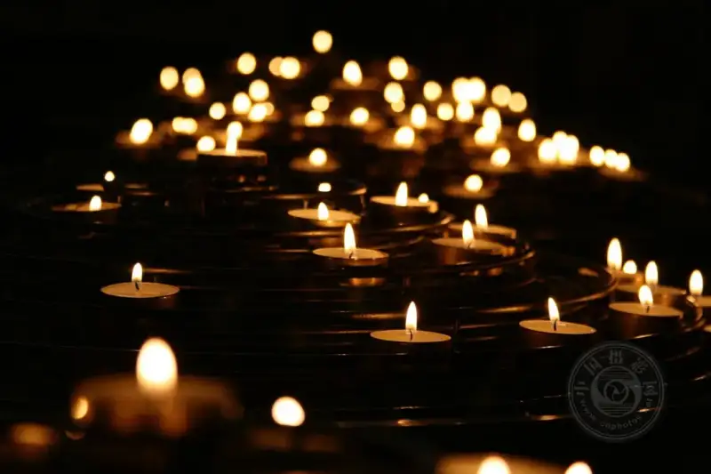
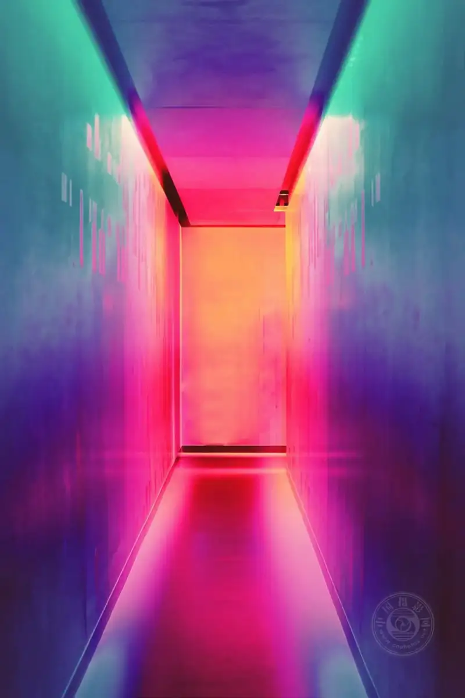
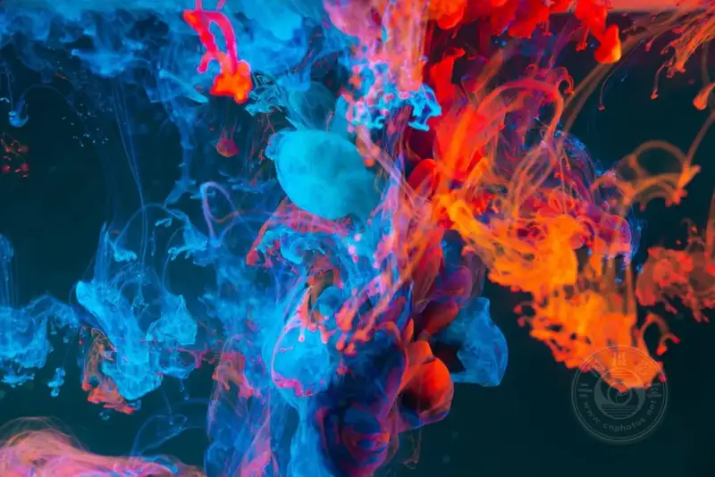
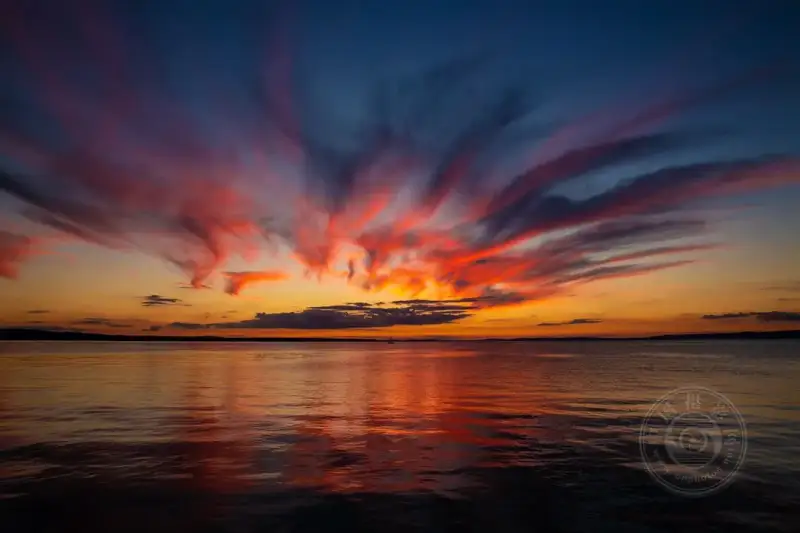
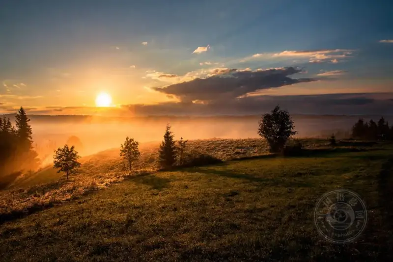

Published: 2024-03-11
Source link: https://www.cnphotos.net/academy/show-164.html
If you have used a digital camera for a while, you have seen a button or setting called "White Balance".
If you have questions about white balance, this guide is for you. It explains the different white balance settings and how to use them in photography.
Photo: Zany Jadraque
Sunrise and sunset are popular times to shoot because the light is soft and the color temperature is low.
What is color temperature?
The first thing to know about light is that different light sources produce different colors. Each color has a color temperature. Your eyes do not see this. Your brain compensates for different color temperatures, so you only see white light. A camera does not compensate. Unless you tell the camera with a white balance setting, it only captures the actual light and color temperature in the scene.
Color temperature is measured in Kelvin (K). These are the basic ranges for different types of light:
- 1000-2000K:Candlelight
- 2500-3500k:Tungsten light (a normal household bulb)
- 3000-4000k:Sunrise or sunset (clear sky)
- 4000-5000k:Fluorescent light
- 5000-5500k:Electronic flash
- 5000-6500k:Daylight (clear sky, sun overhead)
- 6500-8000k:Overcast (medium)
- 9000-10000k:Shade or cloudy sky
Neutral color temperature means midday sun, at 5000-6500K. This is why electronic flash and studio lights are balanced between 5000 and 5500K. They aim to match sunlight as closely as possible.
You will also notice large differences between light sources, even when they look the same. For example, two household bulbs may have two different color temperatures.

Photo: Mike Labrum
Candlelight sits at the lowest Kelvin range, 1000K-2000K, and it makes images soft and delicate.
What is white balance, and what white balance presets exist?
Now that color temperature is clear, white balance is easier to understand. White balance balances the color temperature of a photo by adding the opposite color to the image. This returns the color temperature to neutral, and a neutral reading sits between 5000-6500K. White balance lets the camera correct the color cast that different light causes. This makes the image look more natural.
In the film era, handling different kinds of light was tricky, especially indoor tungsten and fluorescent light. In the past, people used special film or complex filters to manage it.
Digital cameras make this much simpler. Even a basic camera has a white balance setting. When needed, you can change the white balance preset for each shot. You will find a set of presets on your camera. Let us look at what they mean.
Auto White Balance (AWB)Auto White Balance (AWB) is the default setting. The camera sets the white balance from the available ambient light and/or flash. AWB on modern cameras is fairly reliable. Still, different light sources and strong ambient light can confuse it.
Custom / Preset White BalanceCustom / Preset White Balance lets you set your own white balance with a gray card. You shoot a photo of 18% gray, the midpoint between true black and true white. Professional photographers usually use this in the studio, where a true white background is very important.
Manual White BalanceManual White Balance lets you set the color temperature directly. The result is very precise because you can adjust the K value in small steps.
Tungsten White BalanceTungsten White Balance adjusts the white balance to remove the orange cast that normal household bulbs add to images. Indoor light is usually warm, so the camera uses a cooler setting to neutralize the color and make it correct.
Fluorescent White BalanceFluorescent White Balance adjusts the white balance to remove the green or blue cast that fluorescent tubes produce. Fluorescent lights come in many types, so some cameras offer several presets for it.
Daylight White BalanceDaylight White Balance is clearly designed for shooting in daylight. However, you should use it only when the sky is clear and the sun is overhead.
Flash White BalanceFlash White Balance is for external flash. Because flash is fairly bright, this mode warms the photo up slightly.
Cloudy White BalanceCloudy White Balance is for days when the sky is not clear. It assumes cloud cover, so it runs warmer than daylight mode.
Shade White BalanceShade White Balance is clearly for shaded conditions. Shadows tend to add a slight blue/green cast to the subject, so this mode adds a little yellow to compensate.
Photo: devn
Indoor and home lighting usually uses tungsten light, and it casts an orange glow over the image. Even with the correct white balance, this effect is hard to remove.
Changing White Balance In-Camera and in Post-Production
You usually change white balance with a dedicated button on most cameras, labeled "WB". You can also find it in the quick menu or in the info shown on the LCD screen. Some basic models have no shortcut button, so you must open the menu settings to change the white balance.
A Custom / Preset White Balance gives the most accurate reading. But it is usually best to use it when the light is stable, such as in a studio. Otherwise you must take a new reading each time the light changes.
If you shoot in RAW, you can also change the white balance in post-production programs such as Adobe Photoshop and Lightroom. This is sometimes called color correction. In Camera Raw, the white balance adjustment has a default box that usually reads "WB: As Shot". Click the "As Shot" box. A drop-down list of presets appears, similar to the presets on your camera.

Photo: Efe Kurnaz
Modern fluorescent lighting can produce many different color casts and tones. Sometimes the best choice is to set a specific white balance.
Auto White Balance
A note on Auto White Balance (AWB). If you shoot in RAW, AWB is more than enough in many cases.
You can shoot with AWB outdoors when the light is simple, or indoors when there is only one type of light. But if you shoot with mixed light, or in very strong tungsten or fluorescent light, AWB may struggle to get it right. In those cases, I recommend setting the white balance to the correct preset.
As with all technology, more advanced cameras have more accurate white balance. But if you need 100% accurate color, especially on a white background, I always recommend custom white balance. Also, if you shoot in JPEG, you cannot apply accurate color correction in post-production. So you must correct the white balance in the camera.
One more note. If you buy a new camera, or use several camera models, the white balance settings may differ slightly. Different cameras affect the final look of the image.
Photo: freestocks
Use a custom white balance to get the most accurate value. This is especially useful when the image has a lot of white, because white easily confuses the camera's internal light meter.
Tint
Besides color temperature, light also has a tint. Color temperature sits on the orange/blue spectrum, while tint sits on the green/magenta spectrum. If you shoot in daylight, or use artificial light with the same K range as daylight, tint is rarely a problem. But if you shoot with tungsten, fluorescent, or LED light, you will face tint issues. Setting the correct white balance preset may not be enough. In that case, shooting in RAW is essential. You can then adjust the tint easily in post-production so the image looks right.

Photo: Lucas Benjamin
Once you understand that light has a color temperature, white balance becomes easy. For most photographers, a basic grasp of color temperature is enough. What matters is knowing when and how to adjust the white balance, either in the camera or in post-production.
What is color balance?
Color balance is an adjustment of color intensity, usually of the three primary colors red, green, and blue. Color balance can change the overall mix of colors in an image, and it is also used for color correction.
Many objects and scenes we see each day show a strong color cast. This usually comes from the way light reflects off the object. For example, sunlit grass may look yellow/green in a photo, while the shaded parts of green grass reflect a bluer color.
White balance and color balance are linked. When you adjust the white balance setting in the camera, you also control the color balance of the image. In essence, color balance is just an extension of white balance.
Photo: Qing Chen
With color balance, we can bring out the tone and the different colors of each of these eggs.
So why do we not always notice changes in the colors around us? The reason is simple. Our brains hold a memory of how things "should" look. Even when an object looks quite different, our memory shapes how we see it. Our brains keep trying to "white balance" the scene so the colors look more neutral.
But sometimes neutral colors take the wow out of a photo. Remember that photography is about light, and you should show the light at its best. Switch the white balance to daylight setting, and you effectively turn off white balance to capture the actual color of the light. This is especially useful when you shoot sunrise or sunset. Auto white balance neutralizes vivid colors and removes the effect of the light.

Photo: Frank Oberle
Do not use auto white balance when you shoot a sunset. It will wash out the beautiful colors in the sky.
Color Balance in Post-Production
If you use Adobe Photoshop, you can make changes with the color balance tool. Choose Image > Adjustments > Color Balance. In most cases you will adjust the midtones panel, unless your image has a color cast in the shadows or highlights that affects the whole image.
Photo: Dário Gomes
The bright colors of this red-and-green chameleon show two opposite colors on the color wheel.
Select the Preserve Luminosity option. This means Photoshop changes the colors of the image, but the brightness and contrast of the tones stay the same. You can now move the Cyan/Red, Magenta/Green, or Yellow/Blue sliders to add or remove color. These colors are arranged as opposites on the color wheel. So adding magenta to the image subtracts green, and so on.
Remember that photography is about light, and you should show the light at its best. Keep in mind that all colors are built from the three primaries: red, blue, and green. If you place these colors on a color wheel, the point where they overlap in the center is neutral gray, between black and white. Where two colors overlap, they form other colors. These are called the subtractive primaries. You can also think of it this way: remove one color from the center of the wheel and you get a new color. Remove red from gray and you get a mix of blue and green, which we call cyan. Remove green from gray and you get a mix of red and blue, which we call magenta. Add red and green and you get the last subtractive color: yellow. These six colors are linked. Once you understand how they work with their opposites, you can easily correct a color cast in an image or adjust a color as needed.

Photo: Dawid Zawita
White balance is an important tool for handling light and its different color temperatures. But white balance always tries to keep colors neutral, and that is not always ideal. Color balance lets you handle color on a more personal level. You choose how colors appear on screen and make them stand out when the situation calls for it. Remember that you need both.